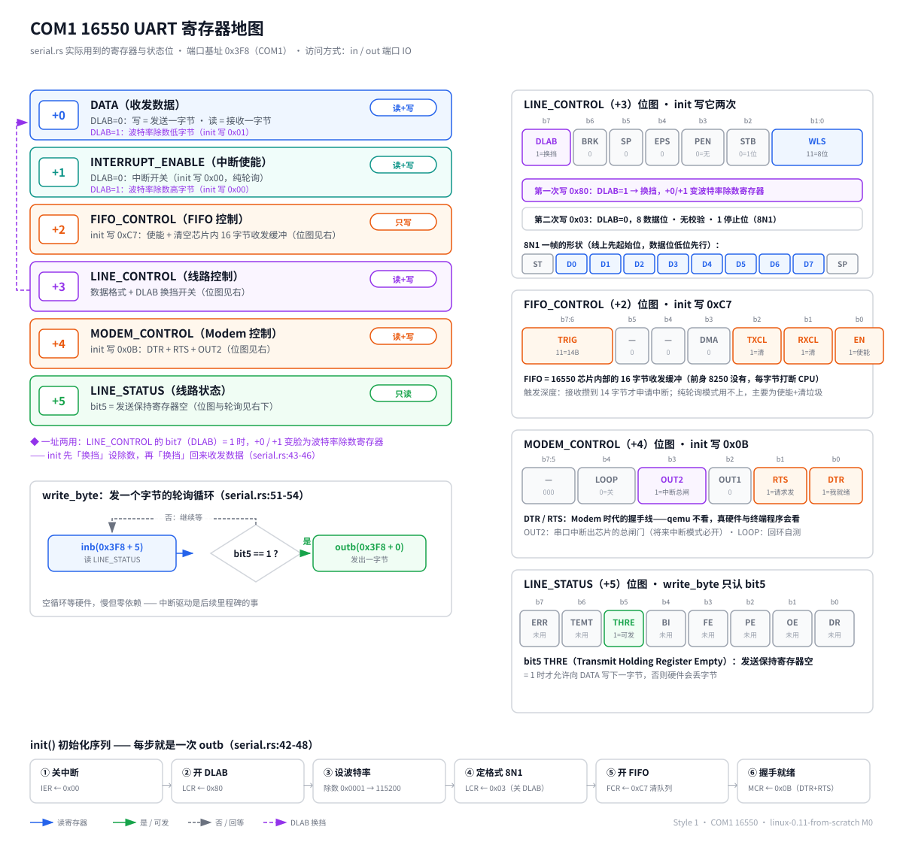
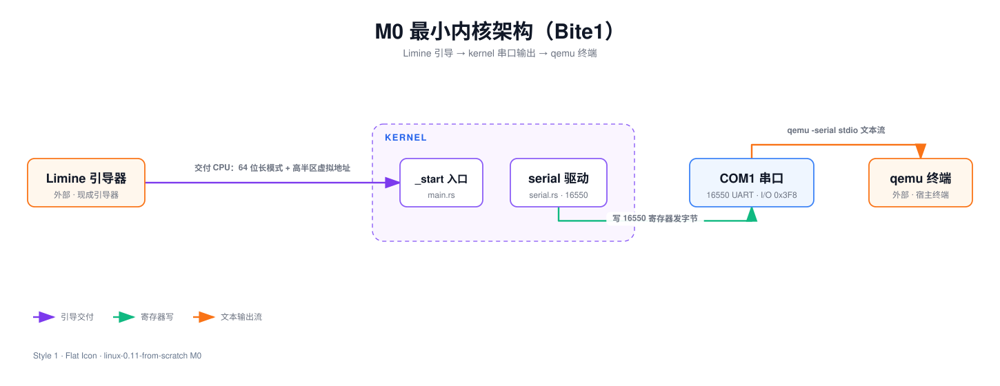
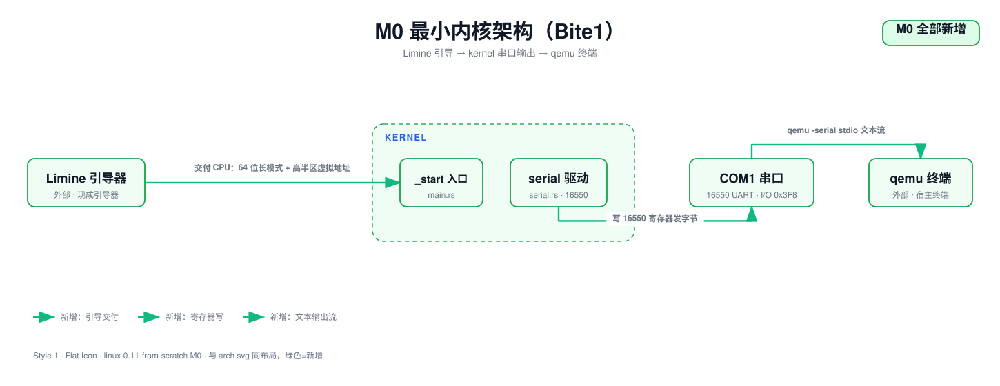
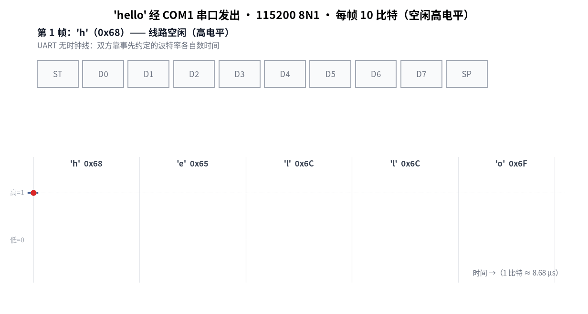

M0 Bite1 · 能编译的内核骨架
no_std + 专用 target + 链接脚本，编出高半区的 ELF64 EXEC
Lead: 本篇交付 M0 第一个 Bite 的编译链路：从零编出一个形状正确的 64 位高半区内核 ELF，入口符号叫 _start。实测输出引自 readelf -h 与 nm，钉死 ELF 五个字段；跑起来的验收在 Bite 2。
问题
裸机上什么都没有：没有操作系统，没有标准库，没有 main，连打印一行字都要自己对着硬件寄存器写。
刚加电的 CPU 归引导器所有，屏幕驱动还不存在。我们手里只有一份 Rust 源码和一个 cargo build，要回答三个问题：
- 代码写成什么样，才能脱离操作系统编译？答案是
no_std加一个专用 target。 - 二进制长成什么样，引导器才肯加载？答案是固定链接地址的 ELF64 EXEC，入口符号叫
_start，约定段里放一份协议握手结构。 - 怎么确认它活了？答案是最原始的输出设备——串口，直接写 I/O 端口。
M0 拆成两个 Bite，因为编译链路和运行链路各有各的坑。编译链路是工具链、链接脚本到 ELF，运行链路是 ISO、qemu 到串口断言。混在一起出错没法定位。本 Bite 只做前者，验收停在 readelf/nm 层面：文件编对了，但还没跑。
背景卡片：内核的二进制形状与输出通道
卡片 A：引导器（bootloader）与 Limine 协议。
CPU 加电后自己不会找内核，它只认识很原始的启动方式[^1]。中间那一大段脏活——读内核文件、解析 ELF、开分页、把 CPU 切到 64 位长模式、跳过去——我们外包给 Limine，一个现代引导器。
外包要按它的协议来：
- 内核在 ELF 的一个约定段（
.limine_requests）里放"请求"，告诉 Limine 我们要什么协议版本。 - Limine 加载内核时会现场批改这些请求。比如把协议版本号原地清零，意思是"这个版本我支持"。
- 然后 Limine 把 CPU 收拾干净（长模式 + 高半区虚拟地址），跳到内核入口
_start。
本 Bite 只用到一个请求：base revision（基础协议版本）。我们请求版本 3，位置在 impl/kernel/src/limine_fb.rs:18。更低的版本已被 Limine 官方弃用，更高的版本太新。
概念深读：从加电到 _start 画出了七棒接力。卡片看不懂就先去读那篇，里面逐步拆开了固件自检、El Torito 和 Limine 各自干了什么。
卡片 B：ELF 可执行文件与链接地址。
链接地址就是"这个程序假设自己被放在内存的哪个门牌号"。编译器和链接器按这个假设生成代码里的全部地址；运行时真把它放到别处，地址全错。
我们的内核链接在 0xFFFFFFFF80000000（impl/kernel/linker.ld:9），也就是 64 位虚拟地址空间最顶上那 2GB 的起点。把内核放在地址空间上半区，叫高半区内核：下半区完整留给将来的用户程序，两边不打架。
ELF 是 Linux 世界可执行文件的格式，可以理解成一个带说明书的包裹：
- 文件头写明架构、类型、从哪个地址开始执行（entry point）。
- 正文按段分区：代码在
.text，只读数据在.rodata，已初始化数据在.data，未初始化数据在.bss。 - 段摆在哪个门牌号，由链接脚本
impl/kernel/linker.ld说了算。
类型一栏有两个值对内核生死攸关。EXEC 表示地址固定，DYN 表示地址可搬（PIE，给有动态加载器的系统用）。裸机内核没有动态加载器，必须是 EXEC。这是个真坑，见「与原版差异」面板里的第 2 条。
卡片 C：串口 UART 16550 与端口 IO。
屏幕驱动还很远，但内核不能当哑巴。串口（COM1）是 PC 上最原始的输出设备：芯片型号约定叫 16550 UART，qemu 用 -serial stdio 就能把它的输出接到终端上。
x86 给这类设备留了一套独立于内存的 I/O 端口地址空间。内存有内存的门牌号，端口有端口的门牌号，两边编号互不相干。访问内存用普通读写指令，访问端口要用专门的 in/out 指令[^2]。COM1 的基址是 0x3F8（PC 惯例），基址加偏移就是各个寄存器：
| 偏移 | 寄存器 | 干什么 |
|---|---|---|
| +0 | DATA | 写=发一个字节，读=收一个字节 |
| +1 | INTERRUPT_ENABLE | 开关串口中断，或波特率除数 |
| +3 | LINE_CONTROL | 数据格式；最高位 DLAB 是"换挡开关" |
| +5 | LINE_STATUS | 状态：第 5 位=发送保持寄存器空 |

DLAB 值得单独说一句。偏移 +0 和 +1 是一址两用：DLAB=0 时是收发数据，DLAB=1 时同一地址变成波特率除数寄存器。所以初始化要先换挡设波特率，再换挡回来收发数据（impl/kernel/src/serial.rs:44-47）。
发一个字节是轮询：反复读 LINE_STATUS，等第 5 位亮起来，再往 DATA 写字节（impl/kernel/src/serial.rs:52-55）。慢，但零依赖，够本 Bite 用。
设计
三个模块、三条边：Limine 把 CPU 交给 _start，内核经 serial 驱动写 COM1，qemu 再把字节变成终端上的字符。

编译链是一条直线，末端产物是那个 ELF：
运行时那条接力链按下图走，注意第 3 行就是本 Bite 要检查的握手：
M0 是工程的第一张架构图，三个模块全部是新增：

arch.svg 与 arch-diff.svg 已随 Bite 2 更新为 M0 完结版，新增了构建链与 SeaBIOS。本节引用的是 Bite 1 时点快照：arch-bite1.svg 与 arch-diff-bite1.svg。
决策卡片 1：第一个驱动选串口还是屏幕
- 决策点：M0 的输出通道走串口还是显存。
- 备选：(a) 串口；(b) 线性 framebuffer。
- 选择理由：选 (a)。串口只要两条汇编指令和一张寄存器偏移表；屏幕要 framebuffer、字体、绘图一串依赖，而此刻还没有内存管理。
- 放弃的成本：(b) 不用 qemu 重定向就能用肉眼直接看输出，验收不依赖串口日志文件。我们没要到这条，代价是每一条验收断言都得从
impl/build/serial.log里 grep，宿主机上看不到实时画面。 - 失效边界：M1 引入 framebuffer 后两路并存，串口继续当"呼吸机"。
决策卡片 2：握手检查放在入口第一件事之后
- 决策点：base revision 检查放在初始化链的哪一步。
- 备选：(a)
serial::init()之后立刻查；(b) 所有初始化跑完再查。 - 选择理由：选 (a)。先
serial::init()是为了确认有地方喊话，随即检查握手。若 Limine 不支持版本 3，内存布局与入口状态全都不可信。 - 放弃的成本：(b) 前面可以先做别的初始化，不必担心协议不支持导致误用响应结构。我们没要到这条，代价是任何依赖 Limine 响应的初始化都必须在检查之后才能做，接入 framebuffer 或内存图响应时没有中间地带。
- 失效边界：接入多份响应结构时，这条检查必须留在最前面。
决策卡片 3：固定地址 EXEC 还是 PIE
- 决策点：ELF 产物类型选 EXEC 还是 DYN。
- 备选：(a) EXEC 固定地址；(b) DYN 可搬，靠运行时重定位。
- 选择理由：选 (a)。跳到主体代码时地址必须已经修好，而内核启动时脚下没有任何服务可以帮它修。
- 放弃的成本：(b) 能拿到 KASLR 这层防护，地址空间布局随机化。我们没要到这条，代价是内核代码与全部静态数据的门牌号固定不变，攻击面少但布局完全可预测。
- 失效边界：M0 阶段没有攻击面，这笔复杂度不划算；将来若暴露网络服务需重估。
代码领读
本 Bite 五个文件，按从外到内的顺序读：
| 文件 | 职责 |
|---|---|
impl/kernel/Cargo.toml |
crate 定义：panic 直接中止 |
impl/.cargo/config.toml |
cargo 配置：编译 target、链接脚本、从源码编 core |
impl/kernel/linker.ld |
链接脚本：高半区基址、段布局、保住 Limine 请求段 |
impl/kernel/src/main.rs |
内核入口：握手检查、打印、停机、panic handler |
impl/kernel/src/serial.rs |
COM1 16550 最小驱动 |
panic = "abort"（impl/kernel/Cargo.toml:15-20）。裸机没有运行时可以逐层拆栈清理现场，panic 只能当场中止。M0 时期整个 crate 零依赖；M1 起引入了官方 limine crate（impl/kernel/Cargo.toml:6-8），那是"少造轮子"的直接结果。
三行 cargo 配置各司一职（impl/.cargo/config.toml:4-16）。注意位置：这个文件在 impl/.cargo/config.toml。cargo 从当前工作目录向上找配置，构建在 impl/ 执行（make -C impl，容器里工作目录是 /work），用 --manifest-path 指到 kernel/Cargo.toml。配置放 impl/kernel/.cargo/ 下会被静默忽略，这是本 Bite 头号坑。
[build]target = "x86_64-unknown-none"# 把链接脚本交给 rust-lld（该 target 的默认链接器）；# 相对路径基于 kernel crate 的根目录解析。# relocation-model=static：该 target 默认产出 PIE（Type: DYN），# 裸机内核没有动态加载器，必须生成固定地址的 EXEC# -znorelro：关掉 GNU_RELRO。否则 lld 会给 .got/.data 再挂一个只读 RELRO PHDR，# 与 RW PT_LOAD 挤在同一页，Limine 加载时会 PANIC（权限冲突）。rustflags = ["-C", "relocation-model=static", "-C", "link-arg=-Tlinker.ld", "-C", "link-arg=-znorelro"]# no_std 内核没有预编译的 core，需要从源码现编（nightly 专属功能，需 rust-src 组件）[unstable]build-std = ["core", "compiler_builtins"]target = "x86_64-unknown-none"：unknown-none 的意思是"厂商未知、操作系统没有"，纯裸机。rustflags 里的 relocation-model=static 强迫生成固定地址的 EXEC，-Tlinker.ld 把链接脚本交给链接器 rust-lld。第三段 -znorelro 是后续里程碑补的，用来关掉 GNU_RELRO；M0 时期 rustflags 只有前两段。build-std = ["core", "compiler_builtins"] 是因为这个 target 没有预编译好的 core，要从源码现编，这是 nightly 专属功能[^3]。
链接地址就是法律（impl/kernel/linker.ld:4-30）。第 5 行 ENTRY(_start) 填 ELF 头里的入口栏；第 9 行把后续所有段排在高半区基址上；第 26 行的 .limine_requests 用 KEEP(...) 包住，因为 rustc 默认开 --gc-sections，会把"没被代码引用"的段回收掉，而这个段只给引导器看。
OUTPUT_FORMAT(elf64-x86-64)ENTRY(_start)SECTIONS{ . = 0xFFFFFFFF80000000; .text : { *(.text .text.*) } /* 段间按页对齐，让 lld 为不同权限的段生成独立的 PT_LOAD */ . = ALIGN(CONSTANT(MAXPAGESIZE)); .rodata : { *(.rodata .rodata.*) } . = ALIGN(CONSTANT(MAXPAGESIZE)); /* Limine 请求区：start → 请求 → end 必须按此顺序，marker 才生效； * KEEP 防止 rustc 默认开启的 --gc-sections 把它回收掉 */ .limine_requests : { KEEP(*(.limine_requests_start)) KEEP(*(.limine_requests .limine_requests.*)) KEEP(*(.limine_requests_end)) }段与段之间按页对齐（第 16、22、32、41 行），让不同权限的段能被分页硬件分开保护。现在还没分页，先把姿势摆对。末尾的 /DISCARD/（impl/kernel/linker.ld:48-51）把 .eh_frame 这类 unwind 元数据扔掉，配合 panic = "abort" 省下无用体积。
协议请求怎么投递给引导器（impl/kernel/src/limine_fb.rs:11-22）。M0 时期是手写的 [u64; 3]：两个魔数加一个版本号，靠 #[used] 保命、靠 #[unsafe(link_section)] 投递到约定段。M1 起改用官方 limine crate，第 18 行一句 BaseRevision::with_revision(3) 就够。两个属性写法一字未变，只是搬进了专门模块。
#[used]#[unsafe(link_section = ".limine_requests_start")]static REQUESTS_START: RequestsStartMarker = RequestsStartMarker::new();/// 继续请求 base revision 3（与 M0 一致；crate 最高支持 6，向下兼容）#[used]#[unsafe(link_section = ".limine_requests")]pub static BASE_REVISION: BaseRevision = BaseRevision::with_revision(3);#[used]#[unsafe(link_section = ".limine_requests")]static FRAMEBUFFER_REQUEST: FramebufferRequest = FramebufferRequest::new();入口 _start（impl/kernel/src/main.rs:22-40）。先 serial::init()，随即检查握手，不支持版本 3 就打印报错停机，通过则打印 M0: kernel alive。M0 时期这个函数到打印完就 halt()；现在第 31 行往下插进了 framebuffer、GDT、IDT，都是后续里程碑的产物。
#[unsafe(no_mangle)]extern "C" fn _start() -> ! { serial::init(); if !limine_fb::BASE_REVISION.is_supported() { serial::write_str("M0: limine base revision 3 not supported\n"); halt(); } let Some(framebuffer) = limine_fb::first_framebuffer() else { serial::write_str("M1: no framebuffer\n"); serial::write_str("M0: kernel alive\n"); halt(); }; console::init(framebuffer); // 回归 marker：M0 存活行 + M1 framebuffer 元数据（改走 printk!，双写屏幕+串口） printk!("M0: kernel alive\n");停机与 panic（impl/kernel/src/main.rs:111-137）。halt() 是死循环执行 hlt，现在没开中断，效果等同永久停机。panic handler 同样收在 halt() 收尾——M0 时期它只有一行；现在会先打印消息和源码位置，那是 M2 Bite 2 加的。
fn halt() -> ! { loop { // SAFETY: hlt 只暂停 CPU unsafe { asm!("hlt", options(nomem, nostack)); } }}/// 打印格式是 Makefile check-m2-b2 验收断言的依据，改动需同步该 target#[panic_handler]fn panic(info: &PanicInfo) -> ! { // PanicInfo 携带两块信息：message() 是 panic!("...") 的 fmt::Arguments // （格式化参数的惰性封装，直接 Display 就能展开），location() 是编译器 // 经 #[track_caller] 记录的源码位置（文件/行/列） panic_print(format_args!("M2: PANIC: {}\n", info.message())); match info.location() { Some(location) => panic_print(format_args!( "M2: PANIC at {}:{}:{}\n", location.file(), location.line(), location.column(), )), None => panic_print(format_args!("M2: PANIC at <unknown location>\n")), } halt()}端口 IO 的两个包装（impl/kernel/src/serial.rs:25-39）。用 asm! 包一层 out dx, al 与 in al, dx，全部内核代码对硬件的访问收敛在这两个函数里。
fn outb(port: u16, value: u8) { // SAFETY: 只读写固定 I/O 端口，不触碰内存与栈；in/out 均不影响 EFLAGS unsafe { asm!("out dx, al", in("dx") port, in("al") value, options(nomem, nostack, preserves_flags)); }}fn inb(port: u16) -> u8 { let value: u8; // SAFETY: 同上 unsafe { asm!("in al, dx", in("dx") port, out("al") value, options(nomem, nostack, preserves_flags)); } value}寄存器偏移与位定义（impl/kernel/src/serial.rs:8-23）。偏移是 16550 datasheet 的行业约定，第 20 行和第 23 行是两个关键位：发送寄存器空标志、DLAB 换挡开关。
/// PC 惯例：COM1 的 I/O 端口基址（BIOS 数据区 0x400 处可查）const COM1: u16 = 0x3F8;// 以下都是相对端口基址的寄存器偏移（16550 datasheet 约定）const DATA: u16 = 0; // DLAB=0 时：写=发送保持寄存器，读=接收缓冲寄存器const INTERRUPT_ENABLE: u16 = 1; // DLAB=0 时：中断使能寄存器const FIFO_CONTROL: u16 = 2; // 只写：FIFO 控制寄存器const LINE_CONTROL: u16 = 3; // 线路控制寄存器（数据格式，最高位是 DLAB）const MODEM_CONTROL: u16 = 4; // Modem 控制寄存器const LINE_STATUS: u16 = 5; // 线路状态寄存器/// LINE_STATUS 第 5 位：发送保持寄存器为空，可以写入下一字节const TRANSMIT_HOLDING_EMPTY: u8 = 1 << 5;/// LINE_CONTROL 第 7 位：DLAB，置位后 DATA/INTERRUPT_ENABLE 变成波特率除数寄存器const DLAB: u8 = 1 << 7;初始化序列与发送（impl/kernel/src/serial.rs:41-55）。七步：关中断 → 开 DLAB → 写波特率除数（除数 1 = 115200）→ 关 DLAB 并定 8N1 → 开 FIFO 并清空队列 → 拉握手线声明就绪。每步就是一次 outb；write_byte 则先轮询第 5 位。
/// 16550 标准初始化序列：关中断 → 设波特率 → 定数据格式 → 开 FIFO → 拉握手线pub fn init() { outb(COM1 + INTERRUPT_ENABLE, 0x00); // 关掉串口所有中断，本阶段纯轮询 outb(COM1 + LINE_CONTROL, DLAB); // 打开 DLAB 以访问除数寄存器 outb(COM1 + DATA, 0x01); // 除数低字节：除数 1 = 115200 baud（基准时钟 1.8432 MHz） outb(COM1 + INTERRUPT_ENABLE, 0x00); // 除数高字节 outb(COM1 + LINE_CONTROL, 0x03); // 关 DLAB；0b011 = 8 数据位、无校验、1 停止位（8N1） outb(COM1 + FIFO_CONTROL, 0xC7); // 使能 FIFO 并清空收发队列，触发深度 14 字节 outb(COM1 + MODEM_CONTROL, 0x0B); // DTR + RTS + OUT2：声明数据就绪、请求发送}pub fn write_byte(byte: u8) { while inb(COM1 + LINE_STATUS) & TRANSMIT_HOLDING_EMPTY == 0 {} outb(COM1 + DATA, byte);}本 Bite 用到的 Rust 语法，逐条对到当前文件：
| 语法 | 位置 | 一句话 |
|---|---|---|
#![no_std] #![no_main] |
main.rs:5-6 |
整 crate 属性：不链 std，没有 C 运行时调 main |
mod serial; |
main.rs:8-14 |
同目录文件是子模块，模块树即文件树 |
pub fn |
serial.rs:42 |
不写 pub 默认私有 |
const |
serial.rs:9 |
编译期常量，用到的地方内联成数字 |
static |
limine_fb.rs:18 |
真占内存、有固定地址，引导器要运行时改它 |
#[used] |
limine_fb.rs:16 |
别当死代码删掉，有人在 ABI 层面用 |
#[unsafe(link_section)] |
limine_fb.rs:17 |
把这个 static 放进指定 ELF 段 |
#[unsafe(no_mangle)] |
main.rs:22 |
符号不改名，链接脚本才按名字找得到 |
extern "C" |
main.rs:23 |
用 C 调用约定，对齐外部世界规矩[^4] |
-> ! |
main.rs:23 |
never type：这个函数永远不返回 |
unsafe 块 |
serial.rs:26-29 |
编译器无法证明安全的操作，程序员签字担责 |
asm! |
serial.rs:28 |
把汇编指令嵌进 Rust |
#[panic_handler] |
main.rs:121-122 |
no_std 下交代 panic 结局，全局只能一个 |
前八条语法 TRPL（《Rust 程序设计语言》中文版）没讲裸机写法，链到官方英文文档：no_std 见 Embedded Rust Book，#[used] 见 Rust Reference，link_section 见 Rust Reference，asm! 见 Rust Reference，#[panic_handler] 见 Rustonomicon。
验收
本 Bite 验收 = 编出形状正确的 ELF，停在 readelf/nm 层面。
构建在 docker 容器里跑（工具链约定见根 Makefile，容器镜像 linux011-rust-toolchain）。实测输出引自 acceptance.md：
$ make -C impl kerneldocker exec linux011-rust-build cargo build --manifest-path kernel/Cargo.toml Finished `dev` profile [unoptimized + debuginfo] target(s)零警告通过。唯一一条 warning 来自 toolchain 内部的 core 库 future-incompat 提示，不是本工程代码。
$ readelf -h impl/kernel/target/x86_64-unknown-none/debug/kernelClass: ELF64Type: EXEC (Executable file)Machine: Advanced Micro Devices X86-64Entry point address: 0xffffffff80000030$ nm impl/kernel/target/x86_64-unknown-none/debug/kernel | grep ' _start'ffffffff80000030 T _startnm 列出 ELF 符号表，grep 只留出入口那一行。三列含义是符号地址 | 符号类型 | 符号名；T 表示代码段的全局符号，_start 是给引导器看的入口，必须全局可见。
| 检查项 | 期望值 | 为什么 | 结论 |
|---|---|---|---|
| Class | ELF64 | 64 位内核 | 通过 |
| Type | EXEC | 固定地址，非 PIE | 通过 |
| Machine | X86-64 | target 没配错 | 通过 |
| Entry | 落在 0xFFFFFFFF80000000 上方 |
链接脚本生效 | 随代码漂移 |
_start 符号 |
地址与 Entry 一致 | 入口没被改花名 | 通过 |
判据是性质，不是定值。Entry 与 _start 的具体地址会随代码改动漂移，别当定值钉死。
跑起来的验收属于 Bite 2，本 Bite 的 ELF 到那里才真正"活"。M0 终验记录同样在 acceptance.md：make -C impl check 用 qemu 从光盘启动，grep 'M0: kernel alive' impl/build/serial.log 命中即通过。
与原版差异 · 常见坑 · 展望
本 Bite 涉及三条既有偏差，无新增偏差。
| 编号 | 偏差 | 本 Bite 的体现 |
|---|---|---|
| D1 | boot 架构永久豁免 | 16 位实模式到 32 位保护模式的脏活全外包给 Limine |
| D8 | 实现语言 C 换 Rust | no_std 生态、asm! 替代内联汇编、panic handler |
| D7 | 文件组织按 Rust 模块树 | main.rs 加 mod serial，不照抄原版 boot/、chr_drv/ |
另外原版 0.11 没有串口日志通道，这是我们的增量能力，登记在 D9 名下。本 Bite 先用了这个通道的串口半边，屏幕半边留到后续里程碑。
cargo 从当前工作目录向上找配置，不看 manifest 在哪。构建命令在 impl/ 跑，配置放在 impl/kernel/.cargo/ 下就找不着——不报任何错，默默按默认 target 编一个主机用的二进制。教训：工具静默降级比报错可怕，用 readelf 看 Machine 与 Type 能立刻识破。
不加 relocation-model=static，产物 Type 是 DYN 不是 EXEC。裸机没有动态加载器，这种文件没法跑。判据就是 readelf -h 的 Type 一栏，验收表里钉死了这项。
docker 容器里默认 root，target/ 属主变成 root，宿主机上删都删不掉。当时的约定是容器命令一律带 -u $(id -u):$(id -g)。后注（2026-10-07）：本机 docker 实为 rootless 模式，该约定反而踩雷。容器内非 root uid 经 subuid 映射后在宿主机不是本用户，写挂载卷直接 Permission denied。rootless 下容器内 root 恰好映射回宿主机当前用户，所以 Makefile 现已去掉 -u。
协议规范现行版本共定义 06 七个 base revision，口径是"05 已弃用"。
弃用声明随 base revision 6 于 2026-03-22 才写入规范，比 pinned 的 v10.8.5 发布（2026-03-12）晚 10 天。
v10.8.5 的 ChangeLog 只实现到 base revision 5（v10.8.0 引入），所以"6 太新未必支持"坐实为事实。
请求 3 虽在弃用区间，但"弃用"不等于"不支持"：引导器对不支持的版本保持请求数组第三项不变。
入口里的握手检查正是兜底，Bite 2 的 make -C impl check 已实测 v10.8.5 接受 3。
展望（Bite 2，已完成）：写了 limine.conf，用 xorriso 把内核与 Limine 打成 ISO，qemu 从光盘启动，串口日志断言 M0: kernel alive 出现——本 Bite 编出的 ELF 至此真正活了。见 Bite 2 教程 与 acceptance.md。
自测
1. 把 impl/.cargo/config.toml 挪到 impl/kernel/.cargo/ 下再构建，最可能看到什么？
- A. cargo 立刻报"找不到配置文件"并中止
- B. 构建照常完成，差别要靠
readelf才看得出来 - C.
readelf里 Type 从EXEC变成DYN - D.
nm里_start变成小写t
第 1 题答案与解析
B。cargo 按当前工作目录逐级向上找配置，放在 kernel 下等于没放。产物会按宿主 target 编，链接阶段才报符号问题，验收时靠 Machine 与 Type 才能识破。
2. 从 rustflags 里删掉 -C relocation-model=static，验收表里哪一栏先红？
- A. Class 从 ELF64 变成 ELF32
- B. Type 从
EXEC变成DYN - C. Entry 掉出高半区
- D.
_start符号从表里消失
第 2 题答案与解析
B。x86_64-unknown-none 默认产 PIE。Entry 地址由链接脚本决定，与此项无关；`no_mangle` 仍在，符号不会消失。
3. 要确认 Limine 是否接受 base revision 3，检查应该放在哪一步？
- A. 入口先
serial::init()喊话，然后立刻检查 - B. 打印存活行之后再检查，输出先给人看到
- C. framebuffer 初始化之后检查，屏幕就绪了再判断
- D. 不用检查，版本不支持时引导器会自己跳
halt
第 3 题答案与解析
A。协议不支持时内存布局与入口状态全都不可信，之后做的一切都白搭。先 init 是为了有地方喊话，喊完立刻查。
4. 把 COM1 基址从 0x3F8 改成 0x2F8（COM2），哪一步最先出问题？
- A.
outb的内联汇编编不过 - B. 写操作落在别的设备上，
write_byte死等发送寄存器空 - C.
write_str的字节顺序前后颠倒 - D. panic handler 抢先接管流程
第 4 题答案与解析
B。端口号是运行期数据，`outb` 照常编译通过。0x2F8 上可能没有 16550，轮询那位要么永远不亮、要么随机亮，两种都是静默失灵。
细节展开
为什么 EXEC 与 DYN 之分对内核是生死问题。
DYN（PIE）文件里的地址全是相对值，指望运行时有个"动态加载器"把它搬到某处、再重定位修正。这个加载器本身也是程序，是操作系统提供的服务。内核是操作系统的本体，它启动时没有任何人在它下面提供服务，地址必须在编译期钉死：EXEC。验收表里 Type 一栏值 EXEC 才算过。
链接地址为什么偏偏是顶上 2GB（0xFFFFFFFF80000000）。
先纠正读法：它不是"在 2GB 的地方"，而是"离天花板还剩 2GB"——2⁶⁴ − 2³¹ = 0xFFFFFFFF80000000，从这里到地址空间顶恰好 2GB。顶楼是高半区设计决定的，下半区留给用户程序；2GB 则是 x86-64 指令集逼出来的：RIP 相对寻址用 32 位有符号偏移，射程只有 ±2GB。把整个内核塞进顶上 2GB，内核内所有地址都能用 32 位偏移表示，代码又小又快。真正的 Linux 内核就链在 0xFFFFFFFF81000000，同一片顶楼 2GB，Limine 按同一约定映射。
「内核代码从 0xFFFFFFFF80000000 开始」这句话要收紧三处。
那是链接起点，不是入口；那是虚拟地址，不是物理地址；那是高半区的下沿，不是低位。本机 debug 构建的段布局如下（readelf -S 实测）：
| 段 | 虚拟地址 | 装什么 |
|---|---|---|
| .text | 0xffffffff80000000 | 代码 |
| .rodata | 0xffffffff80015000 | 字符串、GDT 描述符表 |
| .limine_requests | 0xffffffff8001a000 | 给 Limine 看的握手请求区 |
| .data | 0xffffffff8001b000 | 已初始化的可写数据，含 .got |
| .bss | 0xffffffff8001c000 | 零初始化变量 |
入口 Entry 是 0xffffffff80002500，即 _start 所在处。它不是基址，因为 .text 开头还有编译期插入的桩。验收档案里 M0 那次记的是 0xffffffff80000030，差值来自构建配置。所以断言只能写「落在这个基址之上」，具体数值不作数。
为什么每段都从 4KB 整数边界开始
- 链接脚本里有三处
ALIGN(CONSTANT(MAXPAGESIZE))（impl/kernel/linker.ld:12、linker.ld:17、linker.ld:22）。 - 目的不是美观，是让权限不同的段落落进独立的 PT_LOAD。代码要 R+X、rodata 只要 R、data 与 bss 要 RW。
- 两个段若共享同一个物理页，Limine 只能给这一页一个权限，两边需求冲突时它直接 PANIC。
虚拟地址不是物理地址：readelf -l 里那两栏别读错
- 实测 LOAD 段是
p_offset = 0x1000、p_vaddr = p_paddr = 0xffffffff80000000。看着像"物理也在高半区"，那是误读。 p_paddr这栏是链接器填的占位值，bare metal ELF 里没人消费它。真正把虚拟地址变成物理地址的是 Limine 建的页表项。- M0 阶段 Limine 做的是 1:1 映射，所以此刻物理地址确实落在低 4GB 内。"低位"说的是物理地址，
0xFFFFFFFF8...说的是虚拟地址，两回事。
高半区下沿：上下两半怎么分的
- 低半区
0x0000_0000_0000_0000到0x7FFF_FFFF_FFFF_FFFF，整块留给将来的用户进程。 - 真空带
0xFFFF_8000_0000_0000到0xFFFF_FFFF_FFFF_FFFF，非规范地址，访问直接 #GP。 - 高半区起点就是本节这个链接基址，往上到
0xFFFF_FFFF_FFFF_FFFF恰好 2GB（见上文"链接地址为什么偏偏是顶上 2GB"）。
规范地址（canonical address）为什么是两段，中间的真空带是什么。
x86-64 只用低 48 位地址（4 级分页），规则是高 16 位复制第 47 位。第 47 位为 0 是低半区（128TB），为 1 是高半区（128TB），中间一大段是非法地址，CPU 访问直接 #GP。
真空带不是浪费，是预留的扩建空间。若改成"高位必须全 0"，将来扩到 57 位时旧天花板变半山腰，所有高半区链接地址作废。ARM64（TTBR0/TTBR1 两半区）与 RISC-V（Sv48 等）都有同款真空，这是"部分位宽 + 符号扩展"这一通用设计的必然产物。工程红利：真空带不用建页表项，高层页表项标"不存在"一层就挡掉几 EB。
DYN 文件里的地址与高半区的关系。
DYN 文件存的是从 0 起的相对偏移，所以文件里看不到高半区地址。但这不是为了躲真空，而是"起点未定"的副产品。规范地址是 CPU 在地址生效那一刻的检查，不是 ELF 格式的检查。DYN 程序运行时基址加偏移算出的地址照样必须规范。
用户程序不落高半区是 OS 内存布局约定，不是格式宿命；基址理论上可以选任意规范地址。著名例外是 Linux 内核：它为支持 KASLR 编译成可重定位形态。它自带一段位置无关的解压与重定位 stub——"脚下没人修地址，那我自带加载器"。所以"内核必须 EXEC"的精确版是：跳到主体代码时地址必须已修好。要么编译期钉死（我们的做法），要么自带自举 stub 现场修（Linux 的做法）。
panic = "abort" 省掉的到底是什么（unwind 运行时）。
Rust 没有 JVM/Go 那种重型运行时，但默认假设脚下有一套轻型的 panic-unwind 机制，三件套。一是 .eh_frame 元数据，编译器给每个函数生成"栈帧布局、哪些局部变量要 Drop"的表。二是 unwinder，读表逐层往回爬栈、逐层调析构。三是爬到顶没人接住时调 abort()。这三样是链接 std 时工具链悄悄塞进来的。
裸机 no_std 没有它们：unwinder 不存在，.eh_frame 没人读（链接脚本在 impl/kernel/linker.ld:48-51 把它扔掉），abort() 也没人提供。所以 panic = "abort" 是告诉编译器别生成拆栈的东西，"中止干什么"由我们自己的 #[panic_handler] 交代。C++ 异常用的就是同一套 .eh_frame 加 unwinder。
target 名字（x86_64-unknown-none）有什么规矩。
行业标准格式叫 target triple：<架构>-<厂商>-<系统>[-<环境/ABI>]。对照 x86_64-unknown-linux-gnu、x86_64-pc-windows-msvc、aarch64-apple-darwin。叫三元组但常有四段（环境段是后扩的）；厂商字段基本是摆设，只有 apple 这类真触发特殊行为。none 落在系统位上，意思是没有操作系统：没有系统调用、没有 libc、没有动态加载器，编译器因此拒绝链接 std、只允许 core。这行配置的信息量在于告诉 rustc 代码将来活在什么世界里。
链接脚本（linker.ld）是干什么的。
链接器的"排房表"：决定 ELF 里每个段住在内存的哪个门牌号、哪些段留哪些扔。没有它，链接器用内置默认布局，那是给操作系统上的普通程序准备的。我们的四条核心指令都在 impl/kernel/linker.ld 里：基址、入口栏、KEEP(.limine_requests)、/DISCARD/ .eh_frame。类比：编译器把函数和变量做成贴好类别标签的箱子，链接脚本是仓库平面图，链接器按图施工。
build-std 为什么要 nightly。
官方发布 Rust 时只为常见 target 预编译 std 与 core。裸机 target 的 core 要按我们的编译参数（例如 relocation-model=static）现编。而"从源码编标准库"这个功能至今只在 nightly 开放，还需要装 rust-src 组件。这也是工具链镜像 linux011-rust-toolchain 固定 nightly 的原因。
"预编译的 core 库"是什么。
core 是 Rust 的最小标准库：Option、Result、迭代器、panic! 基本机制，不含任何 OS 依赖（std = core + 文件网络线程等 OS 服务）。每一行 Rust 都隐式依赖 core，裸机内核也不例外。rustup 装 target 时下载的是官方机器编好的二进制，开箱即用。但裸机 target 要么官方不给预编译产物，要么产物编译参数与我们不匹配，只能拿 rust-src 里的源码按自己的参数现编。类比：预编译 core 是标准尺码成衣，常见 target 直接穿；裸机 target 是特殊体型，只能拿布料现裁。
Cargo.toml 和 impl/.cargo/config.toml 是什么关系。
一个是包清单，跟着 crate 走，描述这个 crate 是什么：名字、依赖、编译 profile（如 panic = "abort"）。另一个是 cargo 自身的配置，跟着目录走，描述 cargo 怎么干活：默认 target、rustflags、build-std。查找逻辑的差异正是坑 1 的根源：Cargo.toml 由 --manifest-path 定位，跟包走；impl/.cargo/config.toml 从当前工作目录逐级向上找，跟你在哪敲命令走。多份 config.toml 并存时是合并而非覆盖，越靠近当前目录的优先级越高。
波特率 115200 是怎么算出来的。
16550 的基准时钟是 1.8432 MHz，芯片内部先固定除以 16，再除以我们写的除数寄存器。除数写 1：1843200 ÷ 16 ÷ 1 = 115200。这就是 impl/kernel/src/serial.rs:45-46 写除数低字节 0x01、高字节 0x00 的原因。
init() 里 0x03 / 0xC7 / 0x0B 三个魔数是什么。
LCR = 0x03 = 0b0000_0011，逐位拆开看。WLS=11（bit1:0）选 8 数据位，STB=0（bit2）选 1 停止位，校验位全 0。DLAB=0（bit7）表示关挡。8N1 就是 8 数据位、无校验、1 停止位的缩写，串口界普通话。
帧格式要约定，是因为串口线上是裸比特流，没有字节边界。双方必须事先约好一帧的形状：起始位 → 数据位 → 可选校验 → 停止位。8N1 下每帧 10 比特传 8 比特有效数据，所以 115200 波特约合 11.5 KB/s（除以 10 不是除以 8）。
FCR = 0xC7 = 0b1100_0111：FIFO 是 16550 芯片内部的 16 字节收发缓冲区（前身 8250 没有，每字节打断 CPU 一次）。bit0 使能、bit1 与 bit2 清空收发 FIFO、bit7:6 把接收触发深度设成 14 字节。轮询模式用不上触发深度，写它主要为使能加清垃圾。
MCR = 0x0B = 0b1011：管的是 Modem 握手信号线。bit0 是 DTR（我开机了），bit1 是 RTS（我要发），bit3 是 OUT2（PC 上串口中断出芯片的总闸门，将来中断模式必须开）。qemu 虚拟串口不看这些线，但真硬件和终端程序会看 DTR 与 RTS，顺手写上是无害的标准姿势。bit4 是 LOOP 回环自测，本阶段用不上。
hello 五个字节上线后的逐比特波形与帧结构，一张动画收齐：

起始位为什么永远是 0、停止位为什么永远是 1。
极性不是配置项，是 UART 协议做死在硬件里的。16550 的 LCR 只能配数据位长度、校验、停止位长短，起始位恒为 1 比特低电平。
根源是 UART 无时钟线：帧边界只能靠电平跳变识别。空闲电平为高、起始位为低，那个跳变沿就是发令枪。接收方看到沿就按约定波特率掐表，在每比特正中间采样。停止位必须回到空闲电平，否则下一帧的跳变沿没了。空闲为高是电报时代电流回路的遗产：空闲保持电流可以区分"对方发了 0"与"线断了"。注意 RS-232 电缆上的电压与芯片引脚侧相反，我们说的"高等于 1"是 TTL 侧视角。
停止位不能为 0（16550 只有 1/1.5/2 比特可选）。两帧背靠背连发时，若上一帧 D7=0（ASCII 最高位恒 0，遍地都是），没有停止位回高会怎样。D7(0) 到 ST(0) 没有跳变，帧边界丢失、采样错位，而且永远无法自愈。停止位本质是花 1 比特买"必然回到高电平"这个承诺。1.5 与 2 比特是电传打字机时代给机械字车归位留的喘息窗口，今天恒用 1。
对照：SPI 与 I²C 同步串行带时钟线，不需要起始位和停止位。UART 的 1/10 开销，买的正是少一根时钟线。
hlt 停机与真关机的区别。
hlt 让 CPU 休眠到有中断为止，不是断电。我们现在没开中断，所以效果等同永久停机；将来开了中断（时钟、键盘），CPU 会被定期唤醒，hlt 循环就变成标准的 CPU 空闲等待姿势。
页表是谁建立的，Limine 还是内核自己。
"谁建页表"是分工选择，不是定律，本工程和原版 0.11 各选了一头。原版脚下真的什么都没有，head.s 手写汇编建页表、开分页，先建后活。
我们走 Limine（偏差 D1）：长模式强制要求分页开启，所以它在跳到 _start 之前就得建好页表，并按约定把内核映射到高半区。这就是"两份礼物"的实体，本 Bite 阶段内核一行页表代码都没有。
但 Limine 那套只是过渡期用品：布局是引导器定的，不可能正好是内核想要的长期布局。正规路径是内核先靠它活下来，到内存管理里程碑自建新页表、切 CR3 接管。MMU 硬件只负责翻译，页表内容永远要有人写。区别只在谁写、什么时候写。
串口为什么叫 COM1 / 0x3F8。
PC 历史约定：BIOS 数据区 0x400 处存着至多 4 个串口的 I/O 基址，第一个（COM1）惯例是 0x3F8。qemu 默认就按这个布局模拟，所以写死 0x3F8 在目标环境下是安全的（impl/kernel/src/serial.rs:8-9）。
MMIO 是什么，读写那块"内存"就等于读写设备了吗。
MMIO（Memory-Mapped I/O）指设备寄存器映射进物理地址空间，用普通访存指令即可访问。关键认知：CPU 发出的物理地址出核后由芯片组按范围路由。大部分范围路由到 DRAM，另开了些窗口直通设备（显卡、网卡、NVMe、xHCI、APIC，几乎全部现代设备）。
所以那块地址上根本没有内存条，写它就是改设备的控制寄存器。方向对，但行为和真内存不同，有四个坑。一是读可能有副作用（串口 DATA，读走即弹出）。二是写不等于存，读回的可能不是你写的值。三是不能被 CPU 缓存，内核建页表时 MMIO 区域必须标不可缓存。四是编译器不能优化掉这些访问，Rust 里要用 read_volatile 与 write_volatile。
我们 Bite 1 的串口是端口 IO，将来屏幕输出的 framebuffer 就是 MMIO，同一系统两种风格并存。
MMIO 是因为端口不够用才发明的吗。
不是，而且历史顺序是反的。MMIO 更古老，PDP-11 与 68000 只有 MMIO，一切皆是内存地址。独立端口空间反而是 Intel 8080/8086 的特色发明，当年卖点是设备不占用金贵的内存地址。ARM 与 RISC-V 没有历史包袱，出生就只有 MMIO。
真正驱动 x86 世界回归 MMIO 的不是 64KB 端口空间不够分配，而是带宽与容量。显存几 MB 起步，网卡与 NVMe 的队列缓冲区动辄几 MB，in/out 一次一个字节根本扛不住。MMIO 走内存总线高速通路，窗口可开几 GB，硬件设计也更简单。串口留在端口 IO 是因为它带宽需求为零，且 40 年软件惯性依赖 0x3F8。老掉牙，但永远可靠，这正是它适合当内核"呼吸机"的原因。
[^1]: 传统 x86 启动从 BIOS 读引导扇区开始，中间要穿越 16 位实模式与 32 位保护模式。原版 0.11 的 bootsect/setup/head 三段汇编干的就是这个，我们外包给 Limine（偏差 D1）。
[^2]: 也有设备把寄存器映射进内存地址空间（MMIO），那时用普通内存读写即可，串口走的是老派端口 IO。
[^3]: 工具链细节见根 Makefile 与 impl/docker/Dockerfile，本教程不重复。
[^4]: 调用约定指参数放哪些寄存器、谁清理栈这类交接规矩，C 约定是全行业通货。